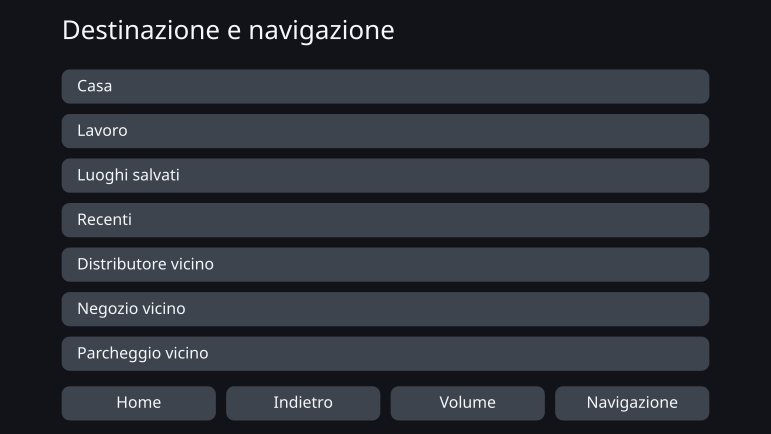
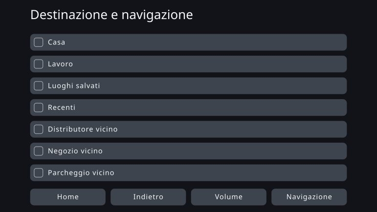
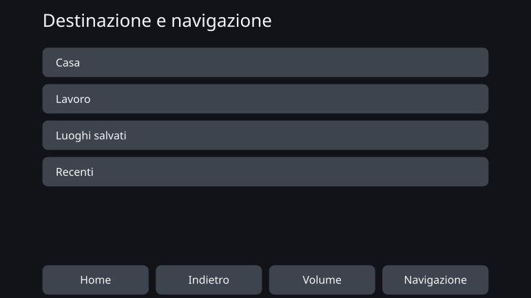

Personal Fit UI - Ottimizzazione individuale dell’interfaccia utente tramite la progettazione per vincoli
agosto 2026
Panoramica
Tutti usano la stessa interfaccia allo stesso modo. Questo lavoro si allontana da quella premessa della produzione di massa e chiede se sia invece possibile generare un’interfaccia adatta alle caratteristiche cognitive, sensoriali e fisiche di ciascuna persona.
L’obiettivo non era un’interfaccia il cui schermo cambia di continuo con la situazione mentre la si usa. Si tratta di un meccanismo che rileva le caratteristiche della persona nel momento in cui inizia a usare il prodotto e genera in anticipo un’interfaccia che le si adatti, rispettando i vincoli di sicurezza e di accessibilità.
In questo lavoro ho messo in pratica un’idea che chiamo progettazione per vincoli. Sulla base della letteratura e delle norme, l’essere umano progetta le direzioni da seguire e i confini da non superare. Dentro quel quadro l’IA decide i valori e le formulazioni concrete, e ciò che viene generato è verificato per accertare che non violi il quadro.
La prova di concetto ha preso come oggetto un sistema di navigazione per auto e ha generato un’interfaccia per tredici profili utente con caratteristiche diverse. Quasi nulla è cambiato a livello visivo. Il risultato è arrivato altrove: scrivendo i vincoli in una forma verificabile è emerso dove resta margine per l’individualizzazione e dove sono i vincoli a consumarlo.
Che cosa significa consegnare a tutti la stessa interfaccia
Oggi la maggior parte dei prodotti è progettata sul presupposto della produzione di massa: una sola interfaccia che copra quante più persone possibile. Anche quando la dimensione del testo o il numero di voci mostrate si possono cambiare, è l’utente a dover trovare lo stato che gli si adatta e a impostarlo.
Questo metodo funziona per moltissime persone. Ma adattarsi a molti e adattarsi a tutti non sono la stessa cosa. Un prodotto può soddisfare tutti gli standard di progettazione condivisi e lasciare comunque fuori chi trova quell’interfaccia difficile da usare.
La stessa struttura compare anche nella valutazione delle interfacce di bordo. La procedura di accettazione della NHTSA statunitense sugli sguardi distolti durante la guida non richiede che tutti i partecipanti soddisfino il criterio. Un compito è superato quando lo rispettano 21 partecipanti su 24: che una parte non lo rispetti è previsto in anticipo dentro la procedura stessa. Un documento presentato all’ente regolatore dai costruttori va oltre e riferisce che circa una persona su sei distoglie lo sguardo più a lungo in modo costante attraverso più compiti. Quel documento proviene dai costruttori soggetti alla norma e chiedeva un allentamento del criterio. Ciò che qui si propone non è allentare il criterio, ma aumentare, tramite l’individualizzazione, il numero di persone in grado di soddisfarlo.
Il senso di un’interfaccia individualizzata non è rendere inedito lo schermo di tutti. È portare le persone che l’interfaccia uniforme lasciava indietro nell’intervallo in cui possono usarla e manovrarla in sicurezza.
Finora il costo di progettare un’interfaccia per una sola persona non era realistico. Da quando l’IA può essere trattata come parte del processo di progettazione, quel presupposto ha iniziato a cambiare.
La navigazione per auto come oggetto
L’oggetto di questo lavoro non è la navigazione per auto, ma l’interfaccia individualizzata. La navigazione è stata scelta come un caso su cui verificarne possibilità e limiti.
Un’interfaccia di bordo porta con sé vincoli forti: uno schermo limitato, tempi di sguardo brevissimi, la sicurezza di ogni manovra. Prima della commercializzazione viene validata come interfaccia uniforme utilizzabile dal maggior numero di persone, e la stessa interfaccia viene poi consegnata anche a chi quel progetto non si adatta.
Se l’individualizzazione regge in un ambito così strettamente vincolato, l’idea della progettazione per vincoli può essere verificata in concreto. Al contrario, è possibile che i vincoli non lascino quasi alcuna libertà all’IA. Era un oggetto che permetteva di osservare entrambe le cose.
In Giappone, nel 2026, convivono modelli che accettano gli aggiornamenti over-the-air e navigatori tradizionali montati in fabbrica che non li accettano. Inoltre, anche dove i dati cartografici possono essere aggiornati, la struttura di base dell’interfaccia non viene necessariamente riprogettata di continuo dopo l’acquisto. Questa prova di concetto presuppone un sistema la cui interfaccia non viene aggiornata di frequente una volta iniziato l’uso.
Rendere l’individualizzazione qualcosa che si possa generare
La progettazione per vincoli consiste nel fissare con chiarezza il quadro e nel lasciare che al suo interno l’IA si muova con flessibilità e con sensibilità per le sfumature. A differenza di un meccanismo parametrico che estrae valori da una tabella stabilita, qui si progetta l’ampiezza stessa delle soluzioni che l’IA può esplorare.
Le conoscenze scientifiche non arrivano sempre fino al numero. A volte indicano soltanto una direzione: ingrandire, mostrare meno. Dove il valore è determinato, lo si calcola come regola; dove si conosce solo la direzione, l’IA definisce il dettaglio entro ciò che i vincoli permettono. Non lasciare sfumare questa distinzione fa parte del meccanismo.
Fissare le dimensioni cognitive
Definire gli assi come caratteristiche che incidono sulla facilità d’uso, non come diagnosi: memoria di lavoro, tolleranza agli stimoli che distraggono, caratteristiche visive e uditive, destrezza manuale.
Tabella di corrispondenza
Collega le caratteristiche dell’utente ai parametri dell’interfaccia che devono muoversi: quale caratteristica muove che cosa, in quale direzione e su quali basi.
Evidenze e norme
Raccogliere criteri di sicurezza, norme di accessibilità, risultati delle scienze cognitive e principi generali di progettazione delle interfacce.
Insieme dei vincoli
Le condizioni che ogni risultato generato deve rispettare. Non restano principi: sono scritte in una forma che permette di verificare se siano soddisfatte o violate.
Spazio di progetto
Tutto ciò che l’interfaccia può variare: dimensione del testo, bersagli tattili, numero di voci mostrate, gerarchia dell’informazione, notifiche, lessico, ordine, raggruppamento. La tabella di corrispondenza dà la direzione della regolazione; l’insieme dei vincoli elimina le soluzioni non ammesse.
L’IA concretizza dentro il quadro
Nella libertà che resta decide valori, lessico, ordine e raggruppamenti. Una verifica separata conferma l’aderenza al quadro, e viene emessa soltanto l’interfaccia individualizzata che soddisfa tutte le condizioni.
Prova di concetto: un’interfaccia per tredici profili utente
Per la prova di concetto sono stati preparati tredici profili utente con combinazioni diverse di caratteristiche. Non riproducono alcuna distribuzione reale di utenti: sono punti di una griglia di verifica, con le caratteristiche collocate di proposito per capire quali di esse facciano cambiare l’interfaccia.
Per ciascuna si è messa a confronto l’interfaccia uniforme comune, il before, con l’interfaccia generata a partire dalle sue caratteristiche, l’after.
Un caso in cui è cambiato quasi nulla
PS-01 — riferimento (età matura, profilo tipico)
Questo profilo si colloca nell’intervallo tipico per tutte le caratteristiche cognitive, sensoriali e fisiche. Dopo l’individualizzazione il testo è leggermente più grande, ma il numero di voci mostrate, la disposizione e la dimensione delle aree tattili restano pressoché invariati.
Interfaccia uniforme (before)

Interfaccia individualizzata (after)

Un caso in cui il cambiamento si vede
PS-12 — età matura, scarsa destrezza manuale (profilo sensoriale e cognitivo tipico)
Questo profilo coincide con PS-01 per età e per caratteristiche sensoriali e cognitive; soltanto la destrezza manuale è ridotta. Nell’after i bersagli tattili si ingrandiscono e le voci visibili su una schermata scendono da sette a quattro. Le restanti passano alla schermata successiva, ed è proprio questo a garantire la dimensione di ciascun bersaglio.
Interfaccia uniforme (before)

Interfaccia individualizzata (after)

La letteratura indica il limite inferiore che un bersaglio tattile deve rispettare e la direzione in cui ingrandirlo quando la precisione del gesto è bassa. Non stabilisce però in modo univoco quanto aggiungere per questa singola persona. È quella parte indeterminata che l’IA ha concretizzato, entro i margini dei vincoli.
Che cosa ha dato la prova di concetto
Un cambiamento chiaramente visibile è stato riscontrato solo in PS-12, una su tredici. Per la maggior parte dei profili l’interfaccia uniforme del before funzionava già abbastanza bene; il beneficio dell’individualizzazione non si è quasi manifestato, almeno in una forma riconoscibile sullo schermo.
In PS-12 l’individualizzazione si è potuta mostrare visivamente, ma un cambiamento di quella portata è alla portata delle impostazioni di visualizzazione e accessibilità già presenti nei prodotti esistenti. Offrire fin dall’inizio uno stato adatto, senza che sia l’utente a doverlo impostare, ha un suo valore. Non si può però dire che sia nata un’interfaccia nuova, proponibile soltanto da un’IA.
Non ho concluso da questo risultato che l’individualizzazione tramite IA fosse riuscita.
Perché la differenza non è emersa
La causa sta nel fatto che lo spazio di progetto che soddisfa i vincoli era stretto.
Un’interfaccia di bordo ha numerosi limiti inferiori e superiori dettati dalla sicurezza. Testo e bersagli tattili devono superare una certa dimensione, e la quantità di informazione visualizzabile su una schermata ha un tetto. Applicandoli uno dopo l’altro, all’IA restavano pochissime soluzioni tra cui scegliere.
Anche gran parte di ciò che l’IA ha concretizzato rientrava, a questa scala, in ciò che una persona può decidere una volta e fissare in una piccola tabella di corrispondenza. Questo non significa che l’IA fosse superflua: ha colmato valori concreti che la letteratura non indica. Le restavano però troppe poche opzioni da esplorare.
La riformulazione del lessico, al contrario, conservava un’ampia libertà. Solo che quelle differenze si vedono male come cambiamenti nella composizione dello schermo: l’ambito in cui la persona poteva riconoscere il valore e l’ambito che le regole non riescono a scrivere non si sovrapponevano.
Il risultato è emerso nel quadro, non nell’interfaccia
Il risultato più grande di questa prova di concetto è nato non nella fase di generazione delle interfacce, ma prima, in quella di progettazione dei vincoli. Trascrivendo norme e letteratura come condizioni verificabili da una macchina sono emerse più incoerenze nel quadro stesso.
- Norme diverse fissavano limiti inferiori diversi per lo stesso elemento dell’interfaccia.
- La condizione «vale solo durante la marcia» non aveva un posto in cui essere scritta nella specifica.
- Due assi di progetto in realtà indipendenti erano stati fusi in uno solo, così che i vincoli escludevano quasi tutte le opzioni.
- All’IA non era stato comunicato con sufficiente chiarezza quale vincolo governi quale uscita, e condizioni estranee entravano nelle sue decisioni.
- Giudizi che andavano lasciati all’IA erano fissati sul lato implementativo, avvicinando la progettazione per vincoli a un semplice motore di regole.
In ciascuno di questi casi l’IA ha rilevato l’incoerenza e indicato il punto interessato, una persona ha deciso e il vincolo è stato corretto.
Il risultato di questo lavoro, dunque, sta meno nel fatto che un’IA abbia creato una nuova interfaccia che nel fatto che lo scambio con l’IA ha messo alla prova e aggiornato il quadro stesso da cui nascono le interfacce. Il ruolo dell’IA nella progettazione per vincoli non è solo generare il prodotto finito. È anche trovare, prima di generare qualsiasi cosa, dove le regole si scontrano e dove una possibilità progettuale è stata cancellata senza che nessuno lo volesse.
Sviluppi futuri: quadro netto, spazio ampio al suo interno
Ciò che la progettazione per vincoli si attende dall’IA non è estrarre da una tabella valori già stabiliti. È escludere con i vincoli ciò che è palesemente inadatto e poi, fra le molte possibilità che restano, proporre la soluzione con la maggiore probabilità di essere valida, oppure mostrare uno schema a cui una persona non avrebbe pensato in anticipo.
Questa volta quell’effetto non si è manifestato a sufficienza. Non perché non ci fossero conflitti, ma perché lo spazio di progetto che soddisfa i vincoli era stretto e non restava quasi alcun senso nello scegliere una soluzione migliore o una soluzione nuova.
La domanda successiva non è se l’IA sia efficace. È: a partire da quale ampiezza dello spazio di progetto nasce l’effetto che solo l’IA può produrre?
Per la prossima applicazione sceglierò un oggetto in cui la sicurezza resti garantita, sopravvivano più soluzioni valide e le differenze che le regole non riescono a scrivere siano riconoscibili come valore anche dalle persone. Il quadro sarà definito con chiarezza. Ma al suo interno resterà l’ampiezza necessaria perché l’IA possa esplorare. È questa coesistenza a fare della progettazione per vincoli un metodo di design per l’epoca dell’IA e non una semplice automazione.